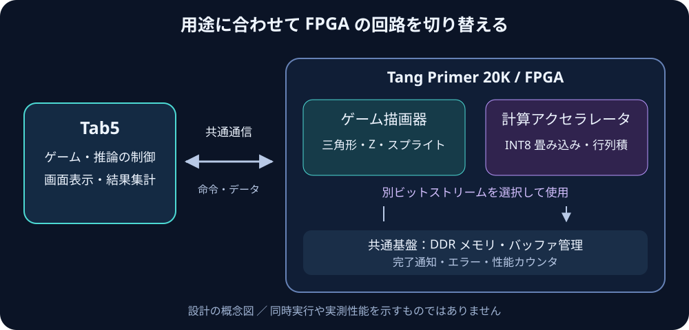
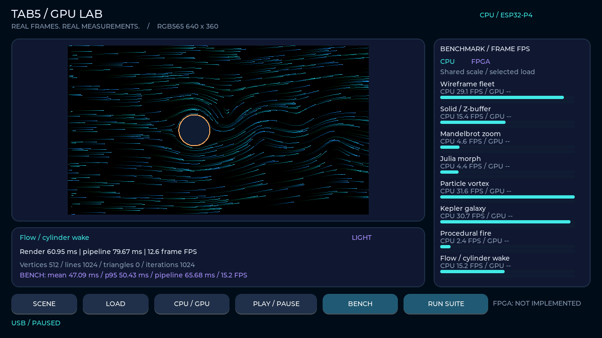

TAB5 × TANG PRIMER 20K
Tab5 FPGA
GPU・推論アクセラレータ
Tab5とTang Primer 20Kによるゲーム描画・WholeBody推論の開発プロジェクト。CPUに対する処理時間の短縮を目的に、ゲーム描画用とCNN推論用を別ビットストリームで設計しています。FPGAの性能評価は未実施です。
PC上で設計・参照実装を検証中 / FPGA性能は未測定

目的と評価条件
CPU基準との性能・出力品質の比較
同一の入力、解像度、処理内容でCPU実装とFPGA実装を比較します。描画・推論の計算時間、通信時間、表示を含む全体FPS、出力品質を記録し、処理時間を制約する区間を特定します。
設計方針
ゲーム描画とCNN推論の用途別設計
初期設計では両用途を同時搭載せず、用途ごとにFPGAを再構成します。
開発計画
マイルストーンと検証状況
「作成済み」と「検証完了」を区別して表示します。段階の合格条件は詳細計画に記録しています。
● 完了◐ 進行中○ 計画◇ 前提待ち
測定結果
CPU描画ベンチマーク
640×360 / RGB565 / 8シーンLIGHT＋流れMEDIUM・HEAVY / 各120フレーム。ウォームアップ24フレーム後のソフトウェア処理FPSです。LCDの走査レートではありません。
FPGAの比較値は実測後に掲載します。現時点で高速化の達成値はありません。

技術資料